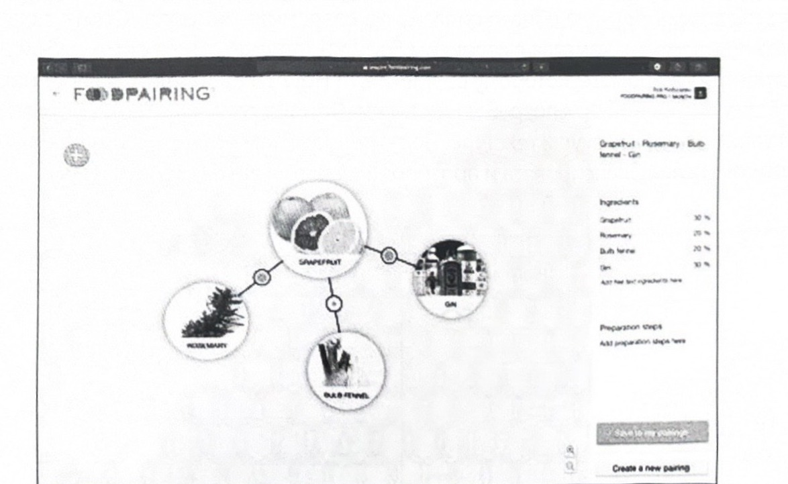
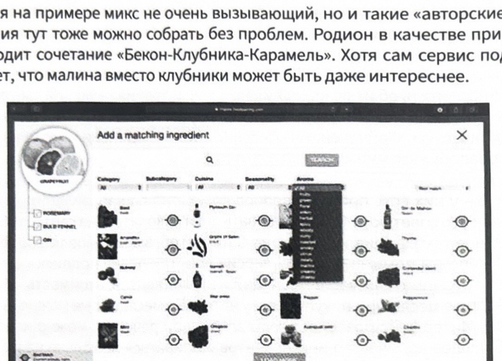
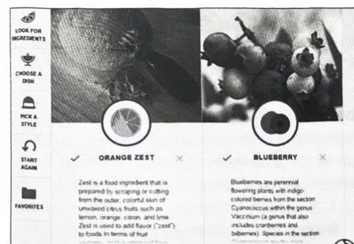
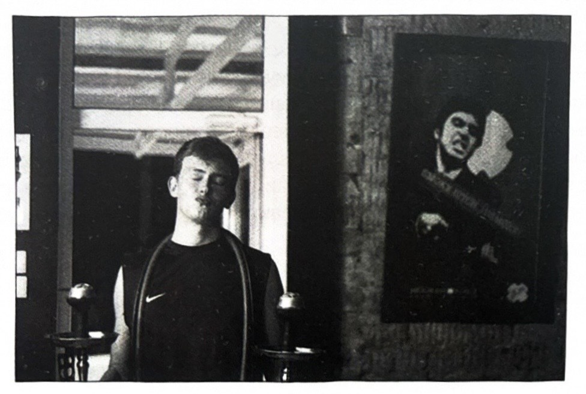
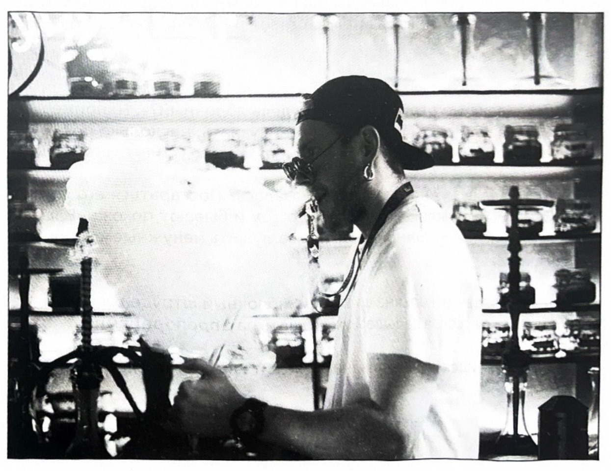
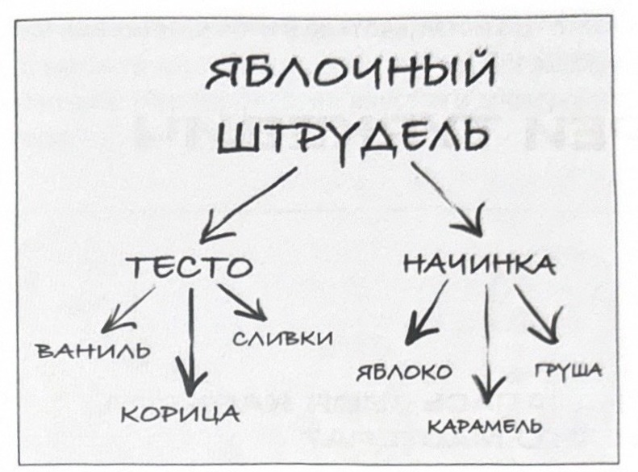

ミクソロジーとは何か
香りの組み合わせに関する大きなセクションです。本セクションには業界トップクラスのマスターたちが参加しています。この章では、フードペアリングから連想に至るまで、味を組み合わせるためのさまざまな手法とアプローチを学ぶことができます。
味の組み合わせ。イリヤ・コブザレフ［COBRA CREW］
ちょっとした前置きです。
ロディオン・エルショフのテレグラムチャンネル（https://t.me/r00m1420）に、Foodpairing（フードペアリング）というテーマを扱った投稿があります。フードペアリングとは、分子的な類似性に基づいて互いに調和する食材を探す方向性のことです。私の考えでは、これは非常に興味深いアプローチで、料理の世界でも時折用いられています。今日は、その支持者と反対者の立場には触れず、また批判のために行われた研究についても、それらが同程度に議論の余地があるという理由から無視することにします。フードペアリングをどう評価するかにかかわらず、この方向性は、カウンターで新しい組み合わせを生み出すマスターたちにとって、とても興味深い思考の土台を与えてくれます。香りを扱う人間として、私個人としては、市場でこうした動きが見られるのは非常に嬉しいことです。ですから、ロディオンにはリスペクトを、そして皆さんには、これが一体どういうものなのかをよりよく理解するために、このアプローチとそのバリエーションに関する一般的な情報を少しお伝えします。
「ファット・ダック（太ったアヒル）」から始めましょう
これは、ミシュランの三つ星を獲得した英国の5つのレストランのうちの一つの名前です。より正確には、そのオーナー兼シェフであるヘストン・ブルメンタールの話です。この人物は数多くのさまざまな賞を受賞しており、料理開発における革新的な手法への情熱で知られています。彼は「マルチセンソリー・クッキング（multi-sensory cooking）」「フレーバー・エンカプセレーション（flavour encapsulation）」「フードペアリング（food pairing）」という方向性のパイオニアとして際立った存在です。
最後の一つについて、もう少し詳しく見ていきましょう。17年ほど前、ヘストンは塩味の食材とデザートを組み合わせる実験を始め、ホワイトチョコレートとキャビアが見事に合うことを発見しました。私はもちろんこれを検証するつもりはありませんが、ブルメンタールの仲間で、フィルメニッヒ（Firmenich、世界最大級の香料製造会社の一つ）で働いていた人物は、この実験に踏み切りました。その結果、彼はどちらの食材もアミンが豊富であると結論づけました。ロシア語の資料では、具体的にトリメチルアミンが挙げられています。（詳細に興味のある方のために、ヘストンの当初の発表とレシピへのリンクを載せておきます。https://www.theguardian.com/lifeandstyle/2002/may/04/foodanddrink.shopping）
この実験で得られた情報は、ブルメンタールを、食材の成分中の芳香物質の類似性に基づく「分子の韻（モレキュラー・ライム）」の目的を持った探求へと駆り立てました。これが今度は、イオノンに基づく「ニンジンとスミレ」、どちらの成分も硫黄化合物が豊富な「レバーとジャスミン」、さらには「パイナップルとブルーチーズ」のような数多くの型破りな解決策へとつながりました。こうした組み合わせを最初に読んだときには非常に複雑な感情が湧きますが、ヘストンのさまざまなプロジェクトが受賞した賞の数や、彼の世界的な知名度は、ここには何かしらあることを示唆しています。
そしてさらに広がっていきました。この方向性は人気を得るようになり、foodpairing.comはわずかな料金で彼らの研究データベースへのアクセスを提供するようになり、さらにフランソワ・シャルティエが『味覚受容体と分子』を書きました。この本は間もなく国際的なグルマン世界料理本賞（Gourmand World Cookbook Awards）で「世界で最も革新的な料理本」賞を獲得しました。その中で著者は、分子組成に基づいたワインの選び方に注目を向けています。例として、彼はローズマリーを使った子羊のラグーとともに辛口リースリングを飲むことを勧めています。シャルティエはこの推奨を、ローズマリーと、リースリングに柑橘系および花のニュアンスを与える化合物との間の、まさにあの「韻」によって説明しています。
全体として、ここではすべてがかなり単純に思えるかもしれません。私自身、まだカウンターの見習いだった頃、「スターバズのPirate's Caveにはライムが入っているから、ミックスに何か柑橘系のものを足せば気持ちいいだろう」というような論理を掴んでいましたが、いいえ、これはそういうことではないのです。本質は、別の角度から見るまで同じものが見つかるとは思わないところに、同じものを探すことにあります。たとえば、ガスクロマトグラフと質量分析計という角度から。
当然、これを自分一人で行うことはできません。だからこそ、私たちは先述のfoodpairing.comのようなサービスにたどり着くのです。このサイト自体について、もう少し詳しく見てみましょう。まず、このリンク（http://www.foodpairing.com/en/science-behind）を載せておきます。ここでは、科学的観点から彼らの基本的なアイデアを簡潔でわかりやすく読むことができます。実際、この会社は「リプトン」「ハイネケン」「ペプシコ」のようなB2B顧客を相手に、幅広いサービスを手がけているので、説明するには時間がかなり必要かもしれません。
肝心なのは、彼らにはフードペアリングという方向性に特化したお試し期間があるということです。ですから、それを試してサイトを掘り下げてみるか、あるいは情報を更新すると約束しているロディオンのあのチャンネルをフォローし続けることをお勧めします。このサービスには、お試し版のほかに3つのサブスクリプションプランがあり、それぞれ利用できる機能と食材の数が異なります。料金は1年分を一括購入する場合で月額1.5、7.5、36.5ユーロです。月単位での購入も可能ですが、少し高くなります。インターフェースでは自分のレシピを作成することができます。多数の食材を使用でき、それらの分子的な類似性だけでなく、カテゴリー（果物、野菜、ハーブ、乳製品など）や芳香の方向性（柑橘系、クリーム系、スパイシー系、ウッディ系など）で並べ替えることもできます。さらには、そこでパーセンテージでミックスを組み立て、自分の創作のアーカイブに記録することまでできます。要するに、全体像をつかんでもらうために、以下にスクリーンショットをいくつか載せておきます。

私の例にあるミックスはあまり大胆なものではありませんが、こうした「オリジナル」の組み合わせもここでは問題なく組み立てることができます。ロディオンは例として「ベーコン-イチゴ-キャラメル」という組み合わせを挙げています。もっとも、サービス自体は、イチゴの代わりにラズベリーを使うとさらに面白くなるかもしれないとヒントを出しています。

このサイトのもう一つの利点は、うまく作られたHow Toのセクションにもあります。これはサービスの使い方を説明するだけでなく、レシピ作成に関する簡単な全般的な手引きも与えてくれます。Foodpairingというサービスに触れていると、おのずと香りに注意が向くことを述べておくべきでしょう。How Toの作成者たちは、食事をする際の私たちの総合的な感覚のうち80%を香りに割り当てています。とはいえ、彼らは味や食感といったものも見過ごしてはいません。これらのセクションには、味をどう組み合わせ、バランスを取り、互いに対比させるとよいかについてのアドバイスがあります。
これらすべてが大げさに思え、このようなツールが過剰だと感じる人のために、もう一つの解決策についてお話しします。私の考えでは、それはより有用性や柔軟性に欠けますが、その代わりはるかに興味深いものです。もったいぶらずに言いますと、IBMのスーパーコンピューターWatsonの話です。ちなみにこれは、かのガルリ・カスパロフをチェスで打ち負かした伝説的なIBM Deep Blueの後継機です。実験として、ウォトソン（あるいはワトソン、お好みの呼び方で）というコンピューターは、ibmchefwatson.comというサイトで希望者全員にコンサルティングを行っていました。しかし、当然ながら、この機械にはもっと有用な仕事が見つかりました。
おそらくまさにそのために、このサイトはしばらく前に閉鎖されました。とはいえ、私はまさに2018年の夏に使っていたような気がするのですが。IBM自身はこれについて何もコメントしていないので、もしかしたら、ひょっとすればまた動き出すかもしれません。面白いものでしたから。稼働中、この機械は月に約5万通りの食材の組み合わせを生成しており、それは否応なく敬意を抱かせるものです。
一方で、このシステムは分子物質の組み合わせだけで動いていたわけではないので、純粋な意味でのFoodpairingムーブメントの一部ではありませんでした。他方で、それは何千ものレシピとその評価から成る膨大なデータの集まりを分析していました。その際、ウォトソンはレシピの新規性を考慮し、単に既知の既存の組み合わせを選ぶだけでなく、何か新しいものを提案しようとし、相乗効果の評価が異なる選択肢の中から選べるようにしていました。同じように、自分のリクエストを、手持ちの食材だけでなく、味のグループやテーマによっても具体化することができました。インターフェースのスクリーンショットは今回用意できなかったので、他人のものを添付しておきます。

これらすべてで何が言いたいかというと、今や味についての科学がさまざまな形でますます広く利用しやすくなっているだけでなく、技術の進歩によって、必要な研究をますます深く進めることができるようになっているということです。確かに、この分野はまだ未開拓で、このテーマに関しては今なお答えよりも問いの方が多いのです。しかし、すでに今、私たちが扱わなければならないものの味を改善する可能性についての理解が近づいてきているのが見えてきています。
当然、製品の製造に携わる人は、平均的なマスターがカウンターで作業する際に必要とされるよりも深く芳香物質のテーマを掘り下げなければなりません。しかし、だからといってそれを学ぶことが皆さんにとって役に立たないというわけではありません。こうしたことは、皆さんが成長し、発展し、まさにこの平均的な統計値より上へと抜け出すのに役立ちます。そして食文化（ガストロノミー）は、新しい情報を覗き見し始めるのに最も都合のよい場所なのです。シフト中にまさにシーシャのカウンターから少し目を逸らし、ゲストが注文する飲み物と詰め方を組み合わせ始めることを、誰も妨げはしないのですから。その飲み物の温度、食感、香り、味もまた、シーシャから得られる感覚を大きく補完しうるということに同意していただけるでしょう。
私個人としては、この分野で面白い組み合わせを見つけるのが好きですが、これはもう恒例ですが、別の機会に話すテーマです。
ミクソロジー。イリヤ・ロマノフ
（インタビューからの抜粋）
シーシャのミクソロジーとバーテンダーのミクソロジーの違いは何ですか？
香りを巧みに、かつ完全に組み合わせることとしてのミクソロジーですか？ 論理はどちらにもあって、残りは別物です。私はかつて、味を組み合わせる論理をバーのテーマ、つまりカクテルのものからもノンアルコールのものからも取り入れていました。私たちの分野では可能性が少なく、たとえば味がそれほど濃厚ではありません。しかし、論理はどちらにも見て取ることができます。たとえば、絶対に組み合わせられない3つの味というものはなく、あるのは無知な配合比率です。強さ、ハーシュさ（きつさ）もあります。私たちのところでは塩味を組み立てるのは非現実的か、あるいは非常に難しいです。多くの人が何かしらの中にそれを感じてはいますが、それは一時的な副次的効果です。添加物なしで非常に辛いものや、他にもいくつかの味も同様に難しいです。カクテルにおける粘性、油っぽさ、ジューシーさは法則性に従って開花します。私たちは味の発展という点ではまだとても若いですが、それでも論理を組み立てています。それは今のところさまざまです。
今日のミクソロジーと5年前のミクソロジーの根本的な違いは何ですか？
私にとっては、私自身の経験の中にあります。市場にとっては、淘汰の中にあります。最も強いものが生き残り、製造の新参者は強者から学びました。品質はより良くなり、味はより多くなりました。組み合わせはより豊かになりました。ゲストたちが面白いものをより繊細に嗅ぎ分けられるようになることを期待していますが、今のところ、経験とともにより強く、より酸っぱくという傾向が続いています。全員ではありませんが、デザートの時期もあり、アールグレイの時期もありました。私個人はこのすべてを追っていますが、自分なりのやり方でやっています。思うに、皆の課題は、注文に応じてあらゆる強さとハーシュさで、害なく、しかしどうかタバコで、最大限に味と蒸気が開いた状態で、1時間にわたって最大限の安定性を提供することだと思います。
とはいえ、これは質問への答えにはなっていません。私にとっては、私は根本的に成長し、アプローチや機材、炭、ボウル、タバコの製造者が生まれ、見つかったということです。市場はより複雑に喫煙するようになり、間違いなく成長しました。全体としてシーシャの素養（リテラシー）は高まっています。ダブルアップル（二倍のリンゴ）は減り、ミックスは増えました。モノのTangiersタバコは減り、Dark Sideタバコ、そしてTangiersタバコは増えました。スターバズは少なく、フマリは少し減り、Nakhlaは変わりました。なんてことだ、今でもライチが恋しいです。
良いミクソロジストは悪いミクソロジストとどう違いますか？
私がマスターについて言ったことは、そのままミクソロジストにも当てはまります。彼は、自分の知識と経験を極めて細心の注意を払って使い、研鑽を積まなければなりません。しかし、それ以上に細心に、ゲストの好みを聴き取り、狙いを定めて傑作を生み出さなければなりません。
虚飾は少なく、独自性はより多く。画家を映し出すのは一筆です。ミクソロジストはコピーすることはできても、再現するのは難しいのです。スタイルが認識できるとは限りませんが、その代わり品質はアプローチからすでに輝いて見えます。私の場合、それほど上手く詰められなかったのに、オーダーテイクの段階からゲストの期待があらかじめとても高かったために、ゲストが歓喜したということがありました。注文とハーシュさには非常に頻繁に的中させますが、強さには無理に合わせようとはしません。しかし、認識できず再現できないオリジナルの作品は、すべてのマスターが持っているべきです。そのほうが単純に楽しいですし。再現された？ じゃあもっと考え出せ！
つまり、これは主観的な概念ということですか？
もちろん！ 主観的です！ 客観的なのは喫煙している本人にとってだけです。
気に入らない、たとえ出来が良くてもね。それなら、お前は望みやオーダーテイクに対して不注意なのです。キリル・ゲンナージエヴィチ自身がかつてこう言いました。味を外したと分かったら、すぐに詰め直す、それ以外については議論の余地がある、と。たしかそんな感じでした。これを尊敬せずにいられますか？
蓼食う虫も好き好き、と言いますが……本当に、どうなんでしょうね？
香りを組み合わせる方法を学ぶためのアドバイスをいくつかください
モノで新しいものを試すこと。市場の傾向と好み、まさに他人の好みを注意深く聴くこと。主観性について上で述べたことを踏まえて。原料とも温度とも、どちらの実験も恐れないこと。ただし、それらすべてはボウル、シャフト、フラスコに添加物を入れず、まさに水だけで喫煙すること。なぜなら、これらはすべてほぼ完成した作品を補正するために必要なものだからです。フルーツカクテルやサラダを研究すること。ミックスが皿の上に、実際にどう見えるかを想像すること。これがメロン、ハチミツ、ベリーなら、どうすればより美味しいか？ ハチミツ50%は明らかにやり過ぎですが、メロンのひと切れと、ハチミツを塗したベリーを散らせば、もう何かになります。2つか3つの味から始めて、その後に初めて発展させること。2つか3つの味の組み合わせから、最も安定したバリエーション（喫煙の全時間を通じて安定したもの）を見つけること。
ビジュアライゼーションについての質問です。あなたは提供（演出）に多くの時間を割き始めた最初の一人ですが、どうやってそこにたどり着いたのですか？
私は、そして私一人ではありませんが、フルーツにベリーを刺した串をぶすぶす挿すのは、ヒョウ柄の服と同じくらい俗っぽいと考えました。シーシャは、本質的にはシャフト、フラスコ、ボウルです。そして味の奥行きは果てしないものです。つまり、私たちが何を喫煙するのかという語りこそが、「料理」のサーブ（盛り付け）なのです。私からすれば、成功の80%はオーダーテイクと提供（演出）です。料理そのものが高水準であればの話ですが。
私たちはビジュアライゼーションのトレーニングを考案しました。語りと連想シーシャです。イリヤ・アシミャンツェフも参加してくれましたし、他にも大勢が参加しました。イゴリ・コノヴァロフは今でもシーシャにまつわる物語においてリーダー的存在で、多くのことを頭に植え付けてくれました。
説明しましょう。私は、たとえば何かの絵の味を詰めるわけではありません。でも、もし赤色が、たとえばミゾ（味噌？）チェリーを連想させるなら、絵を眺めることをより濃密に味わえるようにするミックスを、なぜ作らないのでしょう？ 没入してもらうために？ シーシャはリラックスさせ、思考を「ひとまとめに」集めてくれます。結果として感覚はより深くなります。私たちは「マイアミ・ブリーズ」を毎回違うものにして作り、連想を集め始めました。
会話に割く時間は少なく、てんてこ舞いです。ボウルが山ほどあります。すべてを一気にやり、提供のときに少しだけ多めに語ります。なぜまさにこうなのか、どんな思いがあるのか。ゲストもまた学び、結果として私たちの雰囲気に染まっていきます。私の強さのスケールについても同じです。これはサービスでもあり、スピードでもあり、理解でもあります。時間があれば解説（読み解き）も行いますし、これは私の考えでは、より面白く、話し方や喫煙の文化を育むものです。
連想というテーマは広まりました。これは面白いのですが、あなたにはかなり議論を呼ぶ解決策、たとえばジェルなどがありますね
私はそれらの上にミクソロジーを築かないようにしています。でも、喫煙中に直接味を際立たせたり変化させたりするのは、まさに製品の品質です！ これはサービスでもあり、ゲストへの配慮でもあります。私のところでは、それは別料金ではなく、サービスの一部です。私はパーシャ・ダヴィドフをとても尊敬していて、「シーシュカ」で彼と一緒に働いていました。これはもう一つの可能性です。おそらく、あらかじめそれらを加えるのは必ずしも適切ではありません。1時間味が保たないからです。しかし、てんてこ舞いのとき、ゲストが正しくない喫煙をしていてシーシャが過熱したとき、これは、ゲストからお金を引き出すことなく、その楽しみを延長する素晴らしい方法です。私はそれらを議論を呼ぶものだとは思いません。
それに、私は上でも言いましたが、私は間違えます、私は人間です。いいえ、私はジェルを間違いだとは思いません。私が言っているのは、ただ、もしゲストが気に入らなければ、彼らは来ない、ということだけです。私のゲストは私のアプローチを気に入っていて、だから通ってくれます。そして私は、みんなが満足しているときが嬉しいのです。「シーシュカ」でのジェルにまつわる話は、ゲストにとっては無料です。味の変化を楽しみたければ楽しもうし、嫌ならやらない。多くの人にとって、これは嬉しい発見です。
もう一つ、1から10までの強さのスケールという点があります。これについても多くの人が議論しています。これは当初どのように考えられたのですか？
そもそもスケールは2つあります。強さとハーシュさです。強さとは、喫煙終了後のリラックスの度合いの結果です。ハーシュさとは、過程における感覚です。
Nakhlaタバコをみんなが中くらいと受け止めつつ、ミゾ（味噌？）はアール（グレイ）より軽いと議論しているなら……それを私は基準、中心に据えました。そしてハーシュさを考慮してタバコを分けました。Nakhlaタバコは5〜6、6はシェヘラザード、これはよりきつい……そうして始まったわけです。
簡潔さと教育のために、単純化してまとめることを思いつきました。市場にこんなに受け入れられて、自分でも驚いています。基準点から先はさらに分けることができます。1はノンタバコ、10はシーシャではなく炎、と捉えます。7〜8はTangiersタバコ。9はドハとトンバク（10でもよい）、2はフマリ、などなど。
あなたは強いシーシャが好きですか？
好きです。強くて、しかしまろやかなものが。私が知名度を得たのは、タンジ（Tangiers）でたくさん遊んだからです。私のスケールでは、私はタンジを7か、あるいは上に軽いものを足したもの、つまり少し軽めのものが好きです。9を常用することはありません、それは噂です。でも作ることはできます。
ミクソロジーへのアプローチ。ヴラド・パニューチン、アンドレイ・トゥルケヴィチ
この記事は、私の考えでは、シーシャのミクソロジーにおいて飛躍を成し遂げた2人のマスターによって書かれました。彼らは労を惜しまず、自分たちの理解におけるミクソロジーとは何かについてのテキストを書き、初心者に向けたアドバイスをいくつか与え、未来についての自分たちの考えを語ってくれました。
統計が示すように、大多数の人々がシーシャを喫煙するのは、ニコチンを得て「とろん」と座っているためではなく、美的にも味覚的にも、楽しみを得るためです。
ミクソロジーのおかげで、そして人の味の好み、さらにはシーシャのテーマに関する知識の度合いに基づいて、私たちは誰でも驚かせることができます。驚きの効果は、回を重ねるごとにますます大きく発展させることができ、そうすることでゲストを強さの度合いではなく、シーシャの味の質に沿って導くことができます。それによってゲストのロイヤルティ（忠誠度）を高めるのです。
もしカウンターの厨房に100種類の異なる味のタバコがあれば、それは最低でも1000通りの組み合わせになります。これらすべての香りをソロで喫煙してみれば、どの味が、ある特定の時点で、どの温度で、どのようなニュアンスを与えるのかが分かるようになります。これは皆さんのスキルの発展に大いに寄与するでしょう。
この方向性で発展することに自分が興味を持っていると理解したら、これらの味の一つ一つを香料や味の強化剤に分解することができます。それは皆さんの知識レベルを高め、自分がやっていることに対してより意識的に取り組む助けとなるでしょう。
ミクソロジーは2つのタイプに分けることができます。ベーシックとPRO（プロ）です
簡単なアナロジーで言うと、青と黄という2つの色を混ぜると、結果として緑という新しい色ができます（これがプロのミクソロジーの例です）。ベーシックなミクソロジーは、基本となる色を活かして遊ぶことになぞらえることができます。たとえば、同じ青を、さまざまな色合いで補い（より暗くしたり、より明るくしたり、あるいは別の形でパレットを多彩にしたりするものの、新しい色を合成することはしない）、という具合です。
実際の例で言うと、「モロッコ茶」（セルゲイ・プトコフのミックス）Nakhla Earl Grey + Cinnamon + Mint + Orange + Lemon + 正しい配合比率 = 複雑なミクソロジーの古典的な例の一つです。Nakhla Blueberry + Lemon + Mint = シンプルなミクソロジーの古典的な例の一つです。
全体として、ベーシックなミクソロジーを取り上げるなら、そこには特に傑出したものは何もありません。だからこそ、それは実質的に誰の関心も引かず、皆が口を揃えて叫ぶのです。「何もかもが何とでも合うし、何でも喫煙できるんだから、それなら一体何を悩むんだ、意味は何なんだ？」と。しかし、もしプロのミクソロジーというテーマに触れるとなると、ここからはもう、ずっと面白くなってきます！
プロのミクソロジーは、まだ発展の初期段階にあるとはいえ、非常に複雑で、多面的で、多様です。言うなれば、「複雑なミクソロジー」は複雑であってこそなのです。
このスキルを発展させるためには、物理学、化学を、タバコの混合物全般に関連する形で理解する必要があります。少なくとも「発酵（フェルメンテーション）」などのような概念を理解すること。それぞれの味をさまざまな条件（温度などの）でソロで喫煙すること。最大限に実験し、すべての物事に頭を使って取り組むこと。この営みは、自分にとって何か新しく面白いものを、実質的に無限に発展させていけるものを習得するために、膨大な努力を注ぐ覚悟のある、目的意識を持った人々にのみ可能なものです。
ミクソロジーのような重要なツールの主な使命は何なのでしょうか？
ある状況を想像してみてください。あなたはシフト中で、新しいテーブルの客が来ました。あなたは近づいて、そこに座っている2人の魅力的な女性、金髪と黒髪の女性を観察します。導入のあいさつの後、ありきたりのスクリプト（台本）の代わりに、より気に入った方の女性に（もちろんオーダーテイクの文脈で）こう尋ねることができます。最近どこのカフェ／レストランに行きましたか、と。彼女はおそらくこの突拍子もない質問に答えてくれるでしょう。次にこう尋ねます。そこでどんなデザートを食べましたか、と。仮に、それは「ナポレオン」というケーキで、とても気に入ったと彼女が答えたとしましょう。会話の最後に、締めくくりのフレーズをこんな感じで言います。「他の誰にもできないほど、あなたを驚かせてあげましょうか？」（あるいはそれに類した何か）。それに対して女性は、あなたの説得力次第で、おそらく肯定的な答えをくれるでしょう。
あなたはボウルに「ナポレオン」ケーキのミックスを組み立て、それをこの2人の素敵なお嬢さんに差し出し、何か面白い話を聞かせます。「あなたが洗練されたナポレオンを味わったあのお店のシェフに、その肝はどこにあるのかと尋ねてみたんです。彼は全部教えてくれました。信じられないでしょうが、今、特別に、あなたはそれを喫煙できるんですよ！」と。これで完成です！ こんな提供（演出）をすれば、彼女たちはとろけてしまい、あなたは間違いなく彼女たちを感情へと導いたことになります。あとは、この絵を最後の、しかし非常に重要な仕上げ、すなわち付き添い（サポート）で完成させるだけです。

質の高い、巧みなミックスを作るためには、それに向けてゲストの心を傾けさせる必要があります。まさにそうです、ミックスにゲストの心を傾けさせるのです！ 何かを押しつけたり、何かを語ったり、何かへと導いたりすることはできますが、本質は、あなたが作ったそのミックスを喫煙する人が、あなたが望むとおりに、あなたがそれをイメージするとおりに、それを感じ取れるようにすることにあります。
ミクソロジーのようなツールは、まさにこんなふうに、シーシャマスターの言語的・非言語的な働きかけとともに、直接的に機能するのです。これを用いることで、すでにこの文化への情熱をすっかり失ってしまった人々に、新たな愛を植えつけることができます。
要するに、私たちの理解では、ミクソロジーは近い将来、シーシャ文化にとってのすべてです。ミクソロジー以外の何において、特にすでに高いレベルで働いている時に、これほど大きく先へと発展していけるでしょうか？ そして今この時点で、最も幻想的で、漠然としていて、理解しがたいテーマは何でしょうか？
それを一緒に発展させ、私たち自身も成長していきましょう！
ミクソロジーへのもう一つの視点、ドミトリー・トレハより
シーシャ系YouTubeでは、かつてフィルとトレハによる「ミックス」というコーナーが人気を集めました。次の素材はディマ・トレハが書きました。
味の組み合わせとミクソロジーの手法
シーシャの世界におけるミクソロジーについて、広く知られた2つの見解があります。
ミクソロジーは必要ない、なぜなら一つ一つの注文／詰めたシーシャは唯一無二で、ある人には合っても別の人には合わないから、というもの。ミクソロジーは、より高い確率で、より深い理解をもって、一つ一つの注文に的中させる可能性を与えてくれる、というもの。
この独白をさらに続けるために、私がこれをどう見ているかを皆さんに説明してみます。ミクソロジーとは、その状況に最も適した結果を得るための味の組み合わせです。
コーラにはどんなレモンがより合うのか？ お茶にはどんな蜂蜜がより合うのか？ 味から渋みをどう取り除くか？ これらもすべてミクソロジーです。
味を組み合わせた結果はさまざまでありえ、それはひとえに皆さん次第です。この短い記事では、味を組み合わせるいくつかの基本的な方法についてお話ししようと思います。
私たちの方法を理解するためには、基礎から始めるべきです。
すべてのミックスは次のように分類されます。1. フルーツ・ベリー系。2. グルメ（食事）系。3. ドリンク系：お茶系、アルコール系、ノンアルコール系（ジュース、炭酸飲料、スムージーなど）。4. デザート系。5. 連想系。
なお、味の方向性が欠けているために特定のカテゴリーに分類できない味の組み合わせもあることを指摘しておきます。例えば、ジンジャー＋セージなどです。
では、ミックスとは何でしょうか？ ミックスとは、いくつかの味の組み合わせです。
ミックス = ベース + 追加の味（+ ノート）。ベースとは味の本体であり、ミックスの方向性を決定します。追加の味とは、ベースを補完するか、あるいはそれと対比させて引き立てるものです。ノートとは、喫味や後味のニュアンスです。
シングルベースのミックスの例：「シナモン入りアップルシュトゥルーデル」。ベースは焼き菓子そのもの、追加の味は焼きリンゴ、ノートはシナモンです。
第二のパターンもあります。ミックス = ベース + ベース（+ 追加の味（ノート））。
しばしば二重ベースのミックスでは、それぞれのベースがすでにミックスになっています。二重ベースのミックスの難しさは、ごちゃごちゃ（カオス）にならないようにすることです。
複雑な二重ベースのミックスを作る際には、構成に含まれるベースが喫煙時に判別できるように注意すべきです。それらが互いに調和するのか、それとも対比として引き立て合うのかは、まったく別の問題です。
二重ベースのミックスでは、追加の味は橋渡し役であるか、あるいはまったく存在しないことがよくあります。ノートはたいてい打ち消されてしまいますが、それに取り組んで、ノートも感じられるようにすることもできます。
二重ベースのミックスの例：「アイスクリーム入りアップルシュトゥルーデル」。ここではベース1がアップルシュトゥルーデル、ベース2がアイスクリームです。
ミックスの組み立て方
最も基本的なところから始めましょう。ソロ（単体）の味の試し喫煙です。あなたにとって馴染みのないタバコは、各パックを必ず単体で吸ってみる必要があります。これにより、その味に存在するすべてのノートを見つけ出し、その味の弱点と強みを見つけ、そして最も重要なこととして、これと一緒に吸ったときに相性の良い他の味を頭の中で見つけ出すことができます。単体で吸えば吸うほど、より大きな組み合わせのベース（蓄積）が頭の中に積み上がっていきます。
たくさんのことを頭に留めておくのが難しい場合は、便宜上、表を作ってもよいでしょう。やがて、直感的にボウルに味を放り込んで、思い描いたとおりのものができるようになれば、組み合わせを書き留めておく必要はなくなります。
あなたにとって新しい味の中に、あなたの受容器（味覚）にとって馴染みのないものがあれば、それを記録し、その使い道を見つけるよう努めてください。
味｜理想的な組み合わせ｜良い組み合わせ｜普通の組み合わせ
ラズベリー｜野いちご、いちご｜さくらんぼ、レモン｜ブルーベリー、桃
第二の方法、「何と何を一緒に食べる（飲む）か？」に移りましょう。この方法はもちろん抽象的で、必ずしも有効ではありませんが、それなりに成立します。
私たちの目の前に皿（コップ）があり、そこに食べたい（飲みたい）ものを乗せる必要があると想像してみてください。シーシャのタバコの味の多くは、現実の生活で実際に味わえるものなので、想像するのは難しくありません。課題は、皿に乗せたものすべてを食べる（飲む）のがおいしいかどうかを理解することです。
簡単な例として、シナモンをふりかけたレモンパイと一杯のミルク。おいしいでしょうか？ 明らかにおいしいです。シーシャとしてもおいしいでしょうか？ はい、おいしいです。
もちろん、今これを読んで「うえっ、いや、おいしくない」と言う人もいるでしょう。人それぞれ好みがあり、その好みに当てる（合わせる）ことを学ばなければなりません。
さらに理解を深めるために、飲み物で同じ操作を考えてみましょう。一杯のブラックティーを想像してください。そこに添加物を放り込む必要があります。レモンとジンジャー？ はい、誰もが知っていて、多くの人が好みます。ラムとクローブ？ もちろん、それはもうグロッグに近いものですから。
この方法の欠点は、常にうまくいくとは限らないことです。例として、ココナッツ＋ライム。それらを一緒に食べるのは疑わしいですが、シーシャとしてはとてもよく吸えます。
この方法は、一見明らかでない組み合わせを作るのに非常に適しています。セージをジンジャーとサフランと一緒に食べ、それを緑茶で流し込むことを想像しにくいなら、そういうシーシャを詰めて試してみるべきです。この方法を使うと、頭に浮かびもしなかった新しく興味深い組み合わせをたくさん見つけることがよくあります。

構成要素への分解
この方法の本質をすぐに理解するために、例から始めましょう。
「アップルシュトゥルーデル」を吸いたいと仮定しましょう。シュトゥルーデルとは生地から作る菓子です。現実の生活で生地を作るには、それに味を与える多くの材料が使われます。
シーシャの世界には、そうした味が十分にあり、私たちには最も重要なものが必要です。バニラ、シナモン、クリーム。比率は状況に応じて（タバコのメーカーによって）選ぶべきです。なお、バニラ＋シナモンは、3対1の比率で焼いた生地に近い味になることを指摘しておきます。
次に中身（フィリング）です。焼いた甘いリンゴ。タバコの中でこの味に合うものは何でしょうか？ 明らかに、良いリンゴが必要です。私たちのリンゴにより甘さを与えるためにキャラメル（別名・焦がし砂糖）。そして洋ナシも放り込みましょう。洋ナシはリンゴにとても合い、リンゴの味をより際立たせることができるからです（ここでソロの味の試し喫煙が役に立ちました）。
この場合、ミクソロジーという概念そのものが、「シュトゥルーデルがリンゴ味なのに、なぜここに洋ナシがあるのか？」という問いにおいて私たちを助けてくれることを指摘しておきます。例えば、このようなシーシャのオーダーテイクの際に、ゲストがどれだけ鮮明なリンゴの味を求めているかを聞き出し、もし鮮明な味が必要なら、洋ナシでそれを強めることができます。
必要な味が手元になかったらどうするか？ それを作り出すよう努めることです。多くの味は互いに通じ合っていて、似ていることがあります。あなたの課題は、さらに成分を加えるか、別の味の不要な成分を打ち消すことです。
まとめると、「アップルシュトゥルーデル」の味のシーシャを作るには6つの味が必要で、その先はもうあなたの比率との遊びです。
この方法の本質は、シーシャの味のアイデアを構成要素に分解することです。
アップルシュトゥルーデル｜生地｜中身（フィリング）
クリーム、バニラ、シナモン｜リンゴ、洋ナシ、キャラメル

メーカーが発売した味が、すでにできあがったミックスである場合もあります。
では、できあがったミックスと自分で組み立てたものとは何が違うのでしょうか？ メーカーはこの味をまさにそのとおりに捉えていますが、あなたはあなたで、それを別のように思い描いていたかもしれず、メーカーの組み合わせがあなたには響かなかったということがあります。同じ味を別のタバコから組み立てれば、構成要素を自分の好みに合わせて調整でき、より高い確率でミックスに満足できるでしょう。
それに、論理的に考えてみましょう。「アップルシュトゥルーデル」という味の缶一つは、喫煙の選択肢がたった一つです。一方、このシュトゥルーデルを構成する6つの味から、いくつのミックスを作れるでしょうか？
覚えておいてください。どのシーシャにも、何か良いところがあります。
実験し、うまくいった結果を書き留め、すべての選択肢を試し、シーシャを吸い、自分の女性を愛しなさい。みんな、ロック（rock）だ！
アンドレイ・トゥルケヴィチ
（インタビューより抜粋）
あなたのシーシャマスターとしてのキャリアはどう始まったのですか？
私が初めてシーシャを試したのは、18歳まであと5分というとき、2010年のことでした。初めてアルコールの瓶を空けたのと同じ頃です。なにせ私はスポーツ選手だったので。
私は2014年に、私たちの街のあるアウトソーシング先のカフェで、アルベルトと一緒に働き始めました。彼は今ではクリミアで著名なインフルエンサー（意見のリーダー）の一人です。私はそのような形態でほぼ1年間働きました。街で最初のシーシャラウンジ「グラナート」がオープンし、私はそこへ専属のシーシャマスターとして働きに行きます。7、8か月後、シーシャラウンジ「チェシャ猫（チェシャーキャット）」へ移ります。このプロジェクトについてはもっと詳しく述べたいと思います。
それは私たちの街にとって何かユニークなものでした。フォイル（アルミホイル）のみのシーシャ、時間制の形態、モスクワから来た先輩シーシャマスターたち、彼らはセルゲイ・プトコフの身近な仲間であるグリーシャ・ロドチェンコフ、パーシャ・ゴルバチョフ、そして後にはパーシャ・サヴィノフでした。このシーシャラウンジはモスクワから来た二人の若者が開いたもので、「グラナート」で働いていた間、私はまさにこのシーシャラウンジによく通っていました。
率直に言って、私はそこで働く機会に恵まれました。マスターの一人がカフカス（コーカサス）へ学びに行くことになり、その空いた席に経験のない人を探していたのですが、私が採用されたのです。こうして私とアルベルトの再会が果たされました。そこでまず、グリーシャがゲストとのコミュニケーションを私に教えてくれ、次に物理と化学の基礎をパーシャ・ゴルバチョフが授けてくれ、そして最終的にはそこで、フーカーマッチのチャンピオンであり凄腕のセールスマンであるパーシャ・サヴィノフと知り合いました。これが私の3人の主要なメンターであり、私がマスターとして成長する過程で最も強い影響を与えてくれた人たちです。
この店でほぼ2年間働いた後、2017年の夏、私はNooka Place Yaltaへ移ります。そこで5月初めから8月末まで、私たちは休みなしでヴラド・パニュチンと一緒に働きました。おそらく、このクエストをもって私のマスターとしての成長は完了したと言えるでしょう。
シーシャマスターの最も重要な3つのスキルを挙げてください。
-
シーシャ市場の知識レベルを維持すること。
-
ゲストと適切にコミュニケーションする能力。
-
物理的・化学的な用語を理解し、適切に操る能力。
では、ミクソロジーは？
膨大な数の人々がシーシャにおけるミクソロジーという概念を認めていない私たちの現実においては、これを主要なスキルとは見なせません。もし私の主要なスキルを分析するなら、3つだけに限定したくはないし（これは自尊心の誇示ではありません、本当に）、ミクソロジーはそこに間違いなく入るでしょう。そして、シーシャマスター全般について話すなら、やはりあの3つのスキル＋独自の売り（USP）／こだわり（フィッシュカ）、と呼び方はどうあれ、そういうものになります。
あなたはシーシャのミクソロジーで本当に興味深いことをやってのける能力で名を馳せています。どうやってそこにたどり着いたのですか？
私は自分のこだわり（フィッシュカ）を探していました。今も積み重ね続けている経験のゆえに。繰り返しになりますが、私の理解では、シーシャマスターとは、さまざまな種類の職業から組み立てられた完成したパズルです。料理人、バーテンダー、セールスマン、物理学者、化学者、さらには役者まで。私にとってミクソロジーとは、味の組み合わせと、さまざまな結果を得ることの、果てしない発展です。限界のない発展がどうして魅力的でないことがあるでしょうか？！ なにしろシーシャの構造はおおむね同じままですが、味の組み合わせの理解と見方は成長し、広がっていくのです。これが私のイデオロギー（信条）です。
駆け出しのミクソロジストに、いくつかアドバイスをください。
私がアドバイスするとすれば、第一に、単体の味をさまざまな温度条件で試し喫煙すること。第二に、味のパレットを広げること。第三に、自分の受容器（味覚）を忘れず、それぞれの味を完全に理解し感じ取るために、定期的に受容器を清めること。そして第四に、味の組み合わせについての自分の理解に取り組むことです（混ざらない味、合わない味というものは存在しません）。
受容器（味覚）はどうやって清めるのですか？
方法その1：3、4日間、揚げ物を完全にやめ、野菜と茹でた食品だけを食べ、そして大量の水を飲むことも重要です。
方法その2：水を約70度の温度まで温め、丸一日かけて積極的にうがいをすること。こうすることで、熱い水によって受容器が洗われ、もしそのいくつかが損傷していても、その回復がより速く進みます。
あなたはどんな原則でミックスを作りますか？ 何を指針にしていますか？ 何が許されないことですか？
どのミックスも、私は特定のベースに分解し、そのそれぞれを再現し、特定の比率でさらに進めていきます。例えば、韓国風の辛い人参（コリアンキャロット）を、酢、人参、唐辛子という3つのベースに分けます。比率としては人参を多めに、唐辛子を少し、酢をさらに少なくとります。ミックスの組み立てで最も重要だと考えるのは、特定の味の組み合わせがさまざまな温度でどう振る舞うかについての経験と知識です。ミクソロジーにおいて許されないことは、私の考えでは存在しえません。誰もがそれぞれの見方、それぞれの組み合わせを持っていて、それこそがこの分野の一人ひとりをユニークなものにしているのです。
もっと簡単な例はありますか？
はい、もちろん。季節限定のミックス、グリューワイン／サングリア。本質的には、これらはほとんど同じような話で、提供のされ方が異なり、異なる季節に飲まれ、特定のスパイスが入っています。これらはワイン、香辛料、果物をベースにした飲み物ですが、サングリアは温かいグリューワインと違って冷やして提供される点も異なります。
私たちには3つのベースがあり、それを比率で振り分けます。主役はワインで、それを香辛料で際立たせ、フルーティーなニュアンスを与えます。
-
赤ブドウ（Nakhla El basha）
-
Red grape（Al Fakher）
-
Sevilla Orange（Tangiers）
-
Rose（Al Fakher）
-
Cardamom（Nakhla Sheherazade）
-
Clove（Tangiers）
サングリアを作るなら、何かしらの冷感（クール感）を加えます。私は真実を主張しているわけではなく、これは私の見方なので、このテーマについてはいつでも議論する用意があります。
あなたの考えでは、悪いミックスとは何ですか？
そもそも、悪いシーシャというものが存在しないのと同じように、悪いミックスというものも存在しません。ただし、誰にでも合うわけではないかなり特殊な味があって、それがあるミックスに登場することがある、ということは指摘しておきます。特定の人にとって、特定の瞬間には、そのミックスが合わないということです。また、ゲストが自分の受け付けない味を指定する状況もあります。一部のマスターにとっては、それが一種の「クエスト」として作用し、ゲストの嫌いな味を使ってそのゲストの世界をひっくり返してやろうという考えが浮かびます。統計に基づけば、たとえ組み合わせが非常にうまく選ばれていたとしても、100%のゲストが満足するわけではありません。 [原文ママ: гость де вольным не останется]
どのタバコ同士は混ぜないよう勧めますか？
私はNakhla、Al Fakher、Afzal、Tangiersを使って作業するのが好きです。しかし実際のところ、すべてはすべてと混ざり合うもので、何らかの制約はありません。発想の自由と、味やタバコ銘柄を使う自由、これこそが私のイデオロギー（信条）の主要な側面の一つです。
なぜまさにこれらのタバコなのですか？
繰り返しになりますが、これは私の仕事の経験から来る、純粋に私の好みです。だからといって、私がこの点で実利主義者で、市場の新製品を扱わないというわけではありません。そんなことはなく、どのブランドにもそれぞれのトップ（一押し）があります。
ロシアのタバコでどれを特に挙げますか？
今日この日において、私はO-Tobac [原文ママ: 0-Tobat] を挙げないわけにはいきません。今のところ私の中では一番です。特にDaily Hookah [原文ママ: Daily Heckah] が気に入っています。私の考えでは、これはタバコミックスの構成成分の理想的な配合です。また、Cuf [原文ママ] のタバコの味のパレットも興味深いです。Spectrumも大いに頑張っていて、つい最近、Jack-o-Lanternという味を自分のために発見しました。これは愛です。さらに [原文ママ: Спatarco Кога Фете] を挙げたいと思います。それをエゴール・チグリドフが見せてくれて、その仲間たちの哲学について聞くのはとても興味深かったです。その時以来、製品はより良い方向へとだけ発展しています。 [原文ママ: многое еще не попробовал и предстоит попробовать] まだ試していないものも多く、これから試していくことになりますが、現時点ではこんなところです。